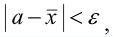
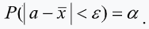
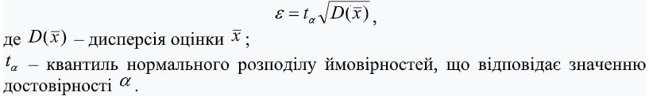
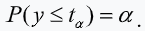
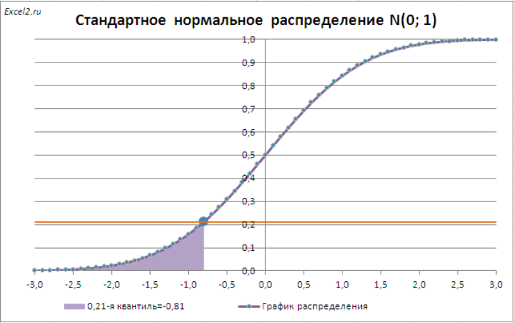

4.2 Визначення точності і достовірності результатів імітаційного моделювання
|
Результати імітаційного моделювання системи носять випадковий
характер. Для забезпечення їх статистичної стійкості шукані характеристики
модельованого процесу оцінюються величинами, які обчислюються як середні
значення досить великої кількості реалізацій.
Вибір кількості реалізацій залежить від того, які вимоги пред'являються до точності і достовірності результатів моделювання. Припустимо, що деякий параметр процесу, що досліджується, оцінюється за результатами моделювання величиною x. Внаслідок випадкових причин величина x буде відрізнятися від істинного (невідомого і тому шуканого) значення цього параметра a. |

|
|
|
Величина ε, така що

називається точністю оцінки x, а ймовірність α того, що така
нерівність виконується – достовірністю оцінки x:

Згідно з центральною граничною теоремою теорії ймовірностей оцінка
x при досить великій кількості реалізацій процесу, що моделюється,
матиме розподіл, близький до нормального. Тому точність оцінки x може бути визначена формулою:

У загальному випадку квантиль tα (α - квантиль,
квантиль рівня α) – це число, для якого виконується умова: значення y випадкової
величини η, що задана функцією розподілу ймовірностей F(y), не перевищує
tα з ймовірністю α:

У даному контексті α – це ймовірність того, що випадкова величина η прийме
значення y, менше або рівне tα.
|
|
Ілюстрація до визначення квантиля нормального розподілу.

|
|